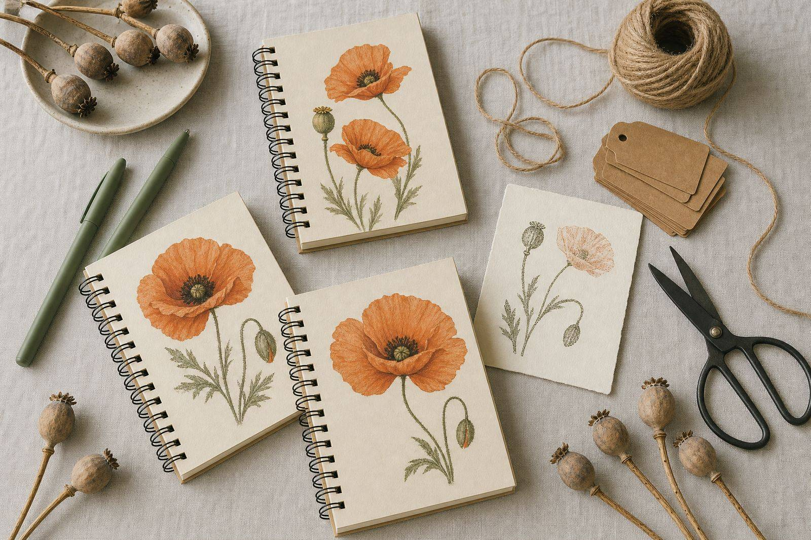
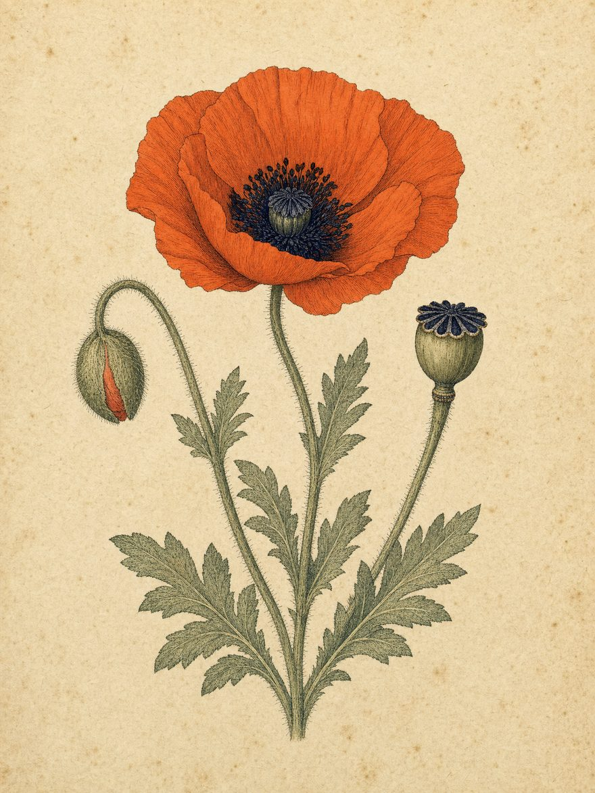

The women we buy from
We believe how we source each kit matters. Whenever possible, we purchase materials and reading extras from women-owned businesses whose creativity, care, and values align with our mission.
By choosing these makers and small-business owners, each Gathered Pages kit supports women twice: first through the women who create what goes inside, and again through the women who receive it.
Meet the Women Behind the Goods
Ruff House Print Shop
Lawrence, Kansas
Jill Shephard runs a letterpress studio and boutique paperie making paper goods and stationery, grown out of her own entrepreneurial vision and her love of design. The gel pens in every kit are hers.
ruffhouseprintshop.comSunshine and Laurel Art
Colorado
Rebekah is a landscape artist whose expressive acrylic paintings blend realism with texture. Inspired by the beauty of nature, her work invites you to slow down and reconnect with the world around you. Twelve of her journals are in our stock.
sunshineandlaurelart.comGinkgo by Laura
Etsy
Laura is a biologist and gardener who draws colorful botanicals inspired by traditional fraktur folk art — a whimsical blend of botanical illustration and fantastical color. Fifteen of her journals are in our stock.
etsy.com/shop/GinkgoByLauraThe Towne Witch
Etsy
Cassandra makes handmade pieces with a touch of enchantment — nature and mystical aesthetics, crafted into meaningful treasures with a whimsical flair. She made the bookmarks.
etsy.com/shop/TowneWitchMagnifique Hearts
South Boston, Massachusetts
Elegant, affordable jewelry and accessories from a business dedicated to women’s empowerment, with a portion of sales benefiting She’s the First. Ours are the stickers and the pins.
@magnifiqueheartsWomen-owned bookshops we love
The Read Queen
Lafayette, Colorado
Founded by friends Deirdre and Barbra, an independent bookstore and coffee shop in a century-old building, and a community hub dedicated to keeping local bookselling alive. Every book we have bought so far — thirty copies and counting — came off their shelves, and so did our first ten journals.
thereadqueen.comBook Club Society
Omaha, Nebraska
Michelle and Megan built a dedicated space for book clubs, spontaneous visits and relaxed reading — part bookshop, part gathering spot, and the answer to “where should we go for book club?”
thebookclubsociety.comThe Next Chapter
Omaha, Nebraska
Established in 2019 by Shelly Mutum, a woman-owned independent bookstore built on a fifty-year family legacy of bookselling, and a community hub in its own right.
nextchapterbooksandgifts.comMake something we should be buying?
We’re always looking to discover women-owned businesses creating thoughtful goods that could become part of a Gathered Pages Book Club Box—from journals, bookmarks, and paper goods to artwork and other meaningful reading extras. We also welcome connections with women-owned printers and independent bookshops.
We proudly recognize the businesses whose products we include by sharing their names inside our kits, featuring them on this page, and tagging them when we highlight their work on social media. If you create something that aligns with our mission, we’d love to hear from you.

Every box begins a conversation. Help us send the next one.